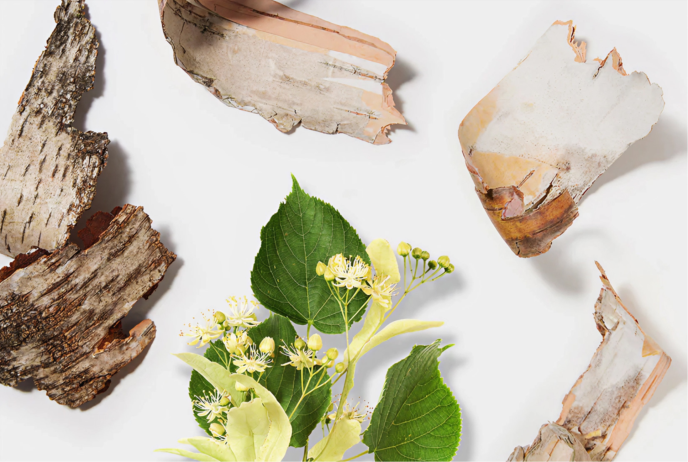
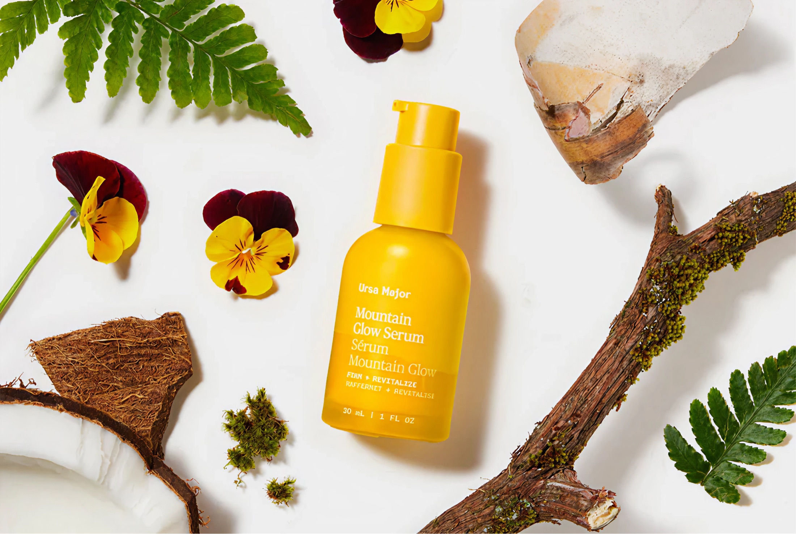

Smoothes fine lines
Star-tipped lichen firm’s the skin to smoothe the look of fine lines.
Formulated for mature skin that wants to look rested and radiant, not retouched.
Star-tipped lichen firm’s the skin to smoothe the look of fine lines.
Honey locust seed lifts and tightens the skin to dial back the appearance of wrinkles
Agarikon mushroom tightens the look of pores and helps skin appear firmer


Moss stem cells hydrate and restore skin’s barrier, helping reduce dryness and redness
Golden aspen bark gently exfoliates skin to reveal a radiant glow